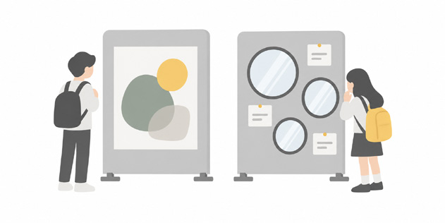
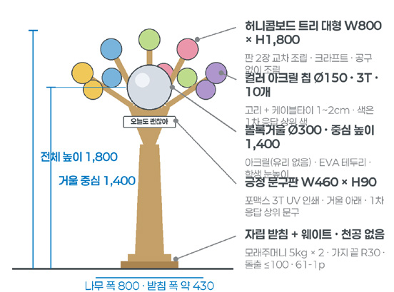
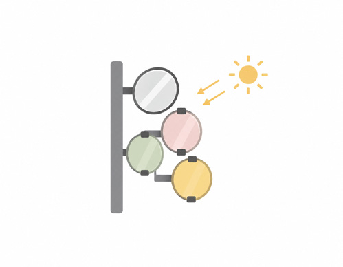
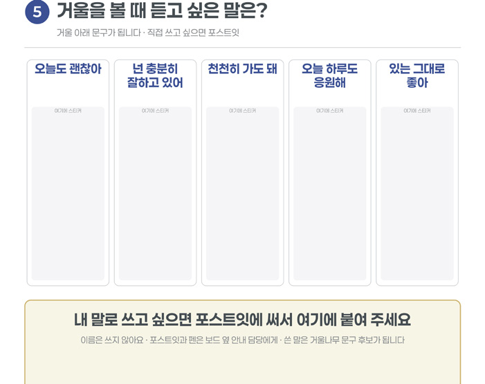
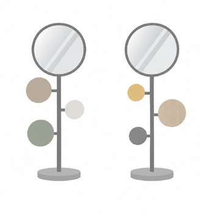
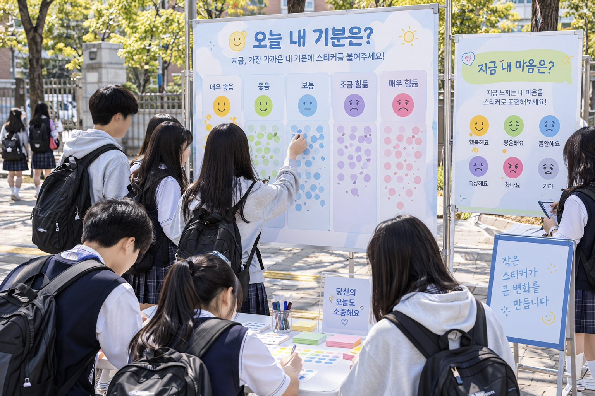
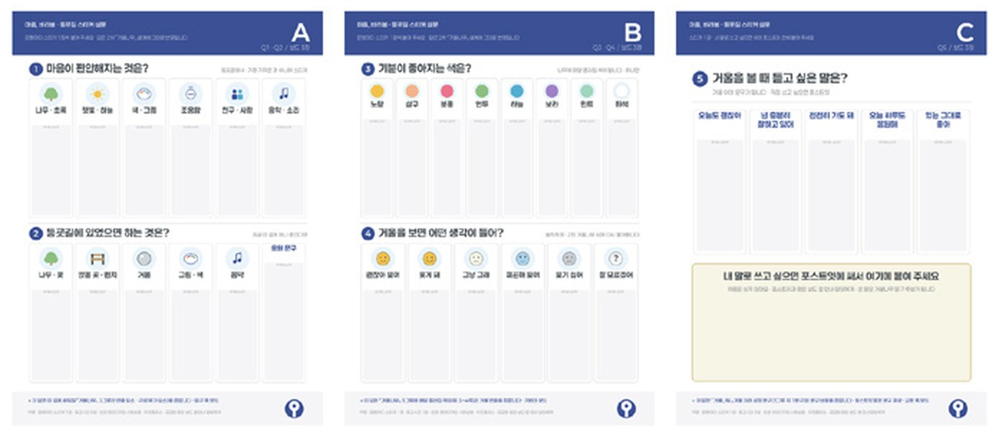
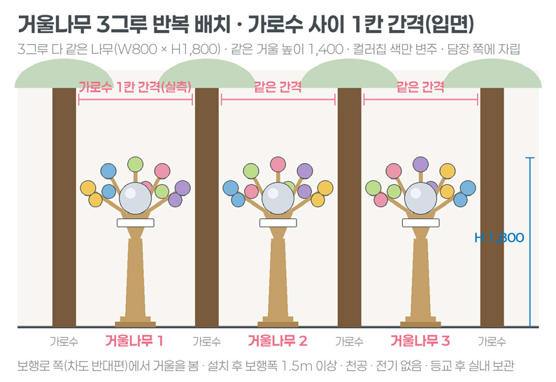
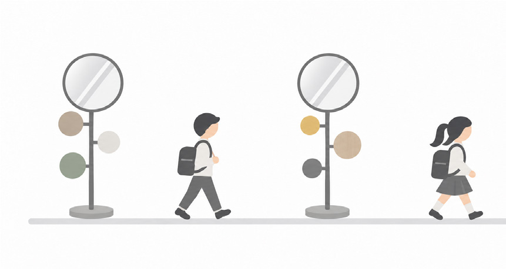

2차 실험 「마음, 마주봄」 현장 적용 시뮬레이션(합성) · 선인재단 교육단지 우측 통학로
02
안전 · 공감하는 인천
선인재단
인천 미추홀구 · 선인재단 교육단지 우측 통학로 약 175m
등굣길의 청소년에게 먼저 마음을 물으면, 그 대답으로 만든 길은 다르게 경험될까
1차 · 스티커 설문「마음, 바라봄」11.10(화)–12(목) 등교시간 3일 · 설문 보드 3장 · 5문항
2차 · 1차 응답으로 만든 거울나무「마음, 마주봄」11.17(화)–19(목) 등교시간 3일 · 거울나무 3그루
73
들어가기Ⅰ 묻다Ⅱ 찾다Ⅲ 설계하다Ⅳ 실험하다Ⅴ 검증하다Ⅵ 남기다
02선인재단
Ⅳ-02선인재단왜 여기인가
여덟 개 학교 학생이 같은 시간에 지나는 통학로에서, 실험은 청소년의 마음을 먼저 물었다
선인재단 교육단지 앞 통학로는 중·고등학생이 매일 아침 같은 방향으로 걷는 길이다. 실험은 이 길에서 무엇이 마음을 편안하게 하는지 학생에게 먼저 묻고, 그 대답으로 만든 시설을 같은 자리에 다시 세웠다.
대상지는 인천 미추홀구 제물포역 북쪽의 선인재단 교육단지다. 인천전자마이스터고·인천대중예술고·인천소방고·선인중·인화여고·선인고·선화여중·인화여중 여덟 개 학교가 한 단지에 모여 있다. 학생들은 제물포역 쪽에서 걸어 올라와 선인재단 정문 방향으로 흩어진다. 실험 구간은 선인고·선화여중 운동장 담장을 따라 난 우측 통학로 약 175m로, 가로수 10그루가 나무 보호틀 사이에 서 있고 차도 쪽으로 난간이 이어진다.
9월 14일과 23일 현장조사에서 낮과 밤, 평일과 주말의 통학로를 기록하였다. 학생들의 등교 동선과 시간은 비교적 일정하였다. 그래서 오래 지켜보는 방식보다 같은 시간대에 집중해서 보는 방식이 맞았다. 10월 15일(목)에는 실험과 같은 등교시간 07:30~08:50에 사전조사를 하여, 설치 전 같은 지점의 통행을 세어 두었다.
출발점은 청소년의 마음이었다. 인천의 정신건강 고위험군 학생은 3년 연속 늘었고, 중·고교생 열 명 중 네 명 가까이가 스트레스를 느낀다고 답하였다. 사업은 문제를 ‘청소년의 심리적 안정을 위한 통학환경 개선’으로 정의하였다. 실험은 상담이나 치료 대신, 매일 지나는 길에서 잠시 자기 마음을 돌아보는 경험을 다루었다.
해법은 두 단계로 나누었다. 1차 「마음, 바라봄」은 통학로에 스티커 설문 보드를 세워 마음이 편안해지는 것, 기분이 좋아지는 색, 거울을 볼 때 듣고 싶은 말을 물었다. 2차 「마음, 마주봄」은 그 응답으로 색과 문구를 정한 거울나무 세 그루를 같은 자리에 세웠다. 1차의 답이 2차의 재료가 되는 구조여서, 두 차수는 하나로 이어지는 단계였다.
여덟 개 학교가 제물포역 북쪽 한 단지에 모여 있고, 대상 보행로는 차도와 운동장 사이를 남북으로 지난다. 항공사진·위치도(OpenStreetMap 바탕)
자료: 인천광역시(2026), 인천 창의디자인 사회실험 사업 심의자료
74
들어가기Ⅰ 묻다Ⅱ 찾다Ⅲ 설계하다Ⅳ 실험하다Ⅴ 검증하다Ⅵ 남기다
02선인재단
Ⅳ-02선인재단왜 여기인가
네 가지 근거는 ‘등굣길에서 마음을 돌아보게 할 수 있는가’라는 하나의 실험 질문으로 모였다
심의 과정에서 정리한 핵심 문제 지표는 지역 통계 세 개와 연구 한 편이었다. 셋은 인천 청소년의 마음 상태를, 하나는 거울이라는 매체의 근거를 보여 주었다.
지역 통계 ①
1,100명
인천의 작년 정신건강 고위험군 학생은 약 1천100명으로, 3년 연속 늘었다.
인천시교육청 2024년 통계
지역 통계 ②
36.9%
인천 중·고교생 2,927명 조사에서 스트레스 인지율 36.9%, 우울감 경험률 26.3%로 집계되었다.
질병관리청 2023년 통계
지역 통계 ③
5등급
인천의 자살 분야 안전수준은 다른 지자체에 견줘 지역안전지수 최하위였다.
행정안전부 2025년 지역안전지수
연구
거울앞
거울을 보며 하는 자기 연민 활동은 긍정적 감정을 돕고 심박 변이도를 개선하는 데 도움이 되었다.
Petrocchi, Ottaviani & Couyoumdjian(2017)
선인재단 실험 질문거울·색·조명의 어떤 요소를 선호하며, 선별한 최종안은 어떻게 경험되는가?
세 지역 통계는 같은 쪽을 가리켰다. 인천의 청소년은 스트레스와 우울을 적지 않게 겪고 있었고, 그 수는 줄지 않았다. 핵심 문제 지표에는 청소년의 우울이 좌절감과 실패감에 대한 자연스러운 반응으로 시작해 충동성과 폭력성으로 드러나는 일이 많다는 전문가 의견도 함께 실렸다. 인천의 작년 정신건강 고위험군 학생은 1천100명으로 3년 연속 늘었고, 자살 분야 지역안전지수는 최하위인 5등급이었다.
실험은 이 문제를 학생들이 학교로 가는 길에서 다루었다. 거울 앞에서 자기를 바라보는 경험이 긍정적 감정을 돕는다는 연구를 근거로, 1차에서는 거울·색·문구 가운데 무엇을 원하는지 묻고, 2차에서는 고른 요소를 묶은 거울나무가 실제 등굣길에서 어떻게 받아들여지는지를 보았다. 시설을 먼저 정하지 않고 학생의 응답을 먼저 받은 것이 이 거점 설계의 출발점이었다.
흔한 설치 순서디자인을 정하고 세운다
요소를 고르는 사람설계자
학생의 자리완성된 시설을 지나는 사람
확인하는 것설치 뒤의 반응
→
선인재단의 순서먼저 묻고, 그 답으로 세운다
요소를 고르는 사람등굣길의 학생
학생의 자리색과 문구를 정한 사람
확인하는 것응답이 설치에서 어떻게 경험되는지
1차의 응답이 2차의 사양이 되는 누적형 실험이었다. 그래서 1차는 학생이 요소를 고르는 조사로 운영하였다.
문제에서 기대효과까지
문제 정의청소년의 심리적 안정을 위한 통학환경 개선 필요
▶
1차 해법스티커 설문을 통한 청소년 정서·선호도 조사
▶
2차 해법거울나무·긍정 문구를 통한 정서안정 효과
▶
기대효과마음을 돌아보는 등굣길 문화
기대효과는 청소년 참여형 디자인이 자기인식과 정서안정에 주는 효과를 확인하는 것으로 정리하였다.
자료: 인천광역시(2026), 인천 창의디자인 사회실험 사업 심의자료
75
들어가기Ⅰ 묻다Ⅱ 찾다Ⅲ 설계하다Ⅳ 실험하다Ⅴ 검증하다Ⅵ 남기다
02선인재단
Ⅳ-02선인재단기획의 변천
계단놀이로 출발한 기획은 위치와 매체를 바꾸며 설문 다음 거울나무라는 두 단계로 좁혀졌다
STEP 1사전기획
초기 통학로 기획
계단놀이 · 액티브디자인. 선인재단 일원 경사로·계단 구간 검토
STEP 2사전기획
반사·색·빛 탐색
반사숲 · 친구의 눈 · 빛 그림자
STEP 3중간 세부 조율
문서상 파티션안
명화 감상 ↔ 거울 · 긍정 문구. 파티션 9개 구성
검토부서검토 · 심의
거울나무 3그루로 명확화
규격·재질, 가로수 사이 1칸 배치, 모서리 마감·고정·보행폭
STEP 4현재 실행계획
5문항 설문 → 응답 분석 → 거울나무
설문 보드 3장 · 거울나무 3그루 · 등교시간 3일씩
11.10–19실행
1차 설문 · 2차 거울나무
1차 11.10–12, 응답 집계, 2차 11.17–19
처음 검토한 자리는 선인재단 일원의 경사로와 계단 구간이었다. 사전 현장조사에서는 이 구간을 기록했고, 그늘과 쉴 곳이 부족해 오르는 길이 피로하다는 점을 문제로 보았다. 초기 기획은 이 계단에 놀이와 몸의 움직임을 더하는 계단놀이·액티브디자인이었다.
다음 단계에서 질문은 몸에서 마음으로 옮겨 갔다. 반사숲, 친구의 눈, 빛 그림자처럼 반사와 색과 빛으로 정서적 경험을 만드는 안을 탐색했고, 이때 거울이 처음 매체 후보로 들어왔다. 실험 질문에 ‘거울·색·조명’이 함께 적힌 것도 이 탐색에서 왔다.
중간 세부 조율에서는 문서상 파티션안을 세웠다. 명화를 감상하는 면과 거울·긍정 문구를 마주하는 면을 파티션 9개에 나누어 담는 구성이었다. 그러나 보행로에 파티션을 줄지어 세우면 통행 폭을 줄이고, 무엇을 보아야 할지도 학생이 고르지 못한다. 현장 여건과 관계기관 의견을 조율하면서 설치 범위와 참여 방식, 평가 방법이 함께 다시 정해졌다.
그 결과가 지금의 두 단계다. 학생이 먼저 고르고, 고른 것을 세운다. 2차 부서검토에서 ‘무엇을 설치하는지 명확히, 거울나무의 규격과 재질을 명확히’라는 의견이 나오자 시설물은 거울나무 형태의 경관 조형물 3그루로 확정되었고, 가로수 사이 1칸 간격으로 반복 배치하는 계획과 1그루 상세도가 보완되었다. 파티션 9개 안은 삭제하였다.
심의에서는 거울나무의 돌출부와 모서리를 안전하게 마감하고 고정 방법과 설치 후 보행폭을 밝히라는 의견이 나왔다. 거울나무는 골판지 계열 허니콤보드로 만들고, 받침을 모래주머니로 눌러 바닥을 뚫지 않았으며, 설치 뒤에도 보행폭 1.5m 이상을 남기도록 담장 쪽에 세웠다. 조명은 탐색 단계의 후보로만 남기고 설치 요소에서 뺐다.
초기 검토안과 실행안에서 바뀐 것
위치
경사로 · 계단선인재단 일원 초기 검토 위치
▼
우측 통학로담장 쪽 가로수 사이 3칸
매체

파티션 9개명화 감상 ↔ 거울·긍정 문구
▼

설문 보드 → 거울나무보드 3장, 거울나무 3그루
요소를 정하는 방식

거울 · 색 · 조명 후보설계자가 탐색한 매체
▼

1차 응답으로 확정컬러칩 색 · 문구판 문구
초기 구상 · 사전기획계단에 놀이·체험 장치를 둔다 오르는 길의 피로가 질문
▶
실행한 실험 · 11.10–11.19학생의 응답으로 거울나무를 만든다 고른 요소가 어떻게 경험되는지가 질문
자료: 인천광역시(2026), 인천 창의디자인 사회실험 사업 심의자료
76
들어가기Ⅰ 묻다Ⅱ 찾다Ⅲ 설계하다Ⅳ 실험하다Ⅴ 검증하다Ⅵ 남기다
02선인재단
Ⅳ-02선인재단기획의 변천
검토 의견은 거울나무의 수량 · 규격 · 마감 · 보행폭을 하나씩 정해 주었다
부서검토와 심의에서 나온 선인재단 의견은 ‘무엇을, 어떤 크기와 재료로, 얼마나 안전하게’ 세우는가에 모였다. 의견마다 사양이 하나씩 정해졌고, 현장에서 그 사양을 다시 확인하였다.
1 계단놀이
2 반사·색·빛
3 파티션안

4 거울나무
네 단계의 구상도. 반사와 거울이라는 매체는 2단계에서 들어와 4단계까지 남았다. 사전기획·중간 조율·현재 실행계획 단계별 개념도
3그루거울나무 수량 가로수 사이 가운데 3칸
1칸나무 간격 가로수 1칸씩 반복
1.5m 이상설치 후 보행폭
0곳천공 · 전기 자립식 받침
검토 의견
거울나무에 반영한 것
현장에서 확인한 것
설치 항목2차 부서검토설치하는 항목이 무엇인지 명확히 표기
▶
경관 조형물 3그루거울나무 형태로 확정, 파티션 9개 안 삭제
▶
세 그루가 한 묶음으로 읽히는지
규격 · 재질2차 부서검토거울나무 규격과 재질을 명확히 표기
▶
1그루 상세도허니콤보드 본체, 아크릴 볼록거울(유리 없음), 컬러 아크릴 칩
▶
조립 상태 · 흔들림 · 파손
모서리 · 고정심의돌출부·모서리 안전 마감, 고정 방법
▶
가지 끝 R30 · 돌출 100mm 이하모래주머니 받침으로 자립, 천공 없음
▶
스침 · 걸림 · 바람에 대한 버팀
보행폭심의설치 후 보행폭 추가 표기
▶
담장 쪽 · 보행폭 1.5m 이상거울은 보행자 쪽, 펜스에 기대지 않음
▶
등교 혼잡 시간의 통행 흐름
의견은 대부분 ‘얼마나’를 물었다. 시설이 무엇인지, 몇 개인지, 어떤 재료인지, 사람이 부딪혔을 때 다치지 않는지, 설치한 뒤 길이 얼마나 남는지다. 거울나무 3그루, 가로수 1칸 간격, 보행폭 1.5m 이상, 천공·전기 없는 자립식은 모두 이 물음에 대한 답으로 정해졌다.
정하지 않고 남겨 둔 것도 있었다. 컬러칩의 색과 문구판의 문구는 1차 설문을 집계한 뒤에 확정하기로 하고, 거울나무 본체와 거울, 컬러 원판은 먼저 발주하였다. 학생의 응답이 들어갈 자리를 비워 둔 채 구조물만 먼저 준비한 셈이다.
검토 과정에서 바뀌지 않은 것도 있었다. 실험의 대상은 처음부터 끝까지 통학로를 지나는 인근 학교 학생이었고, 기록하는 시간은 등교시간이었다. 매체와 위치가 바뀌는 동안에도 ‘학생이 길 위에서 자기 마음을 돌아보는가’라는 질문은 그대로 남았다.
자료: 인천광역시(2026), 인천 창의디자인 사회실험 사업 심의자료
77
들어가기Ⅰ 묻다Ⅱ 찾다Ⅲ 설계하다Ⅳ 실험하다Ⅴ 검증하다Ⅵ 남기다
02선인재단
Ⅳ-02선인재단실험 설계
1차는 마음을 묻고, 2차는 그 답을 마주하게 하였으며, 장소·시간대·계수 지점은 그대로 두었다

1차에서 2차로
1차 「마음, 바라봄」스티커 설문 · 요소를 고른다
2차 「마음, 마주봄」거울나무 · 고른 요소를 경험한다
스티커 한 장으로 마음이 편안해지는 요소를 물으면, 자기 마음을 돌아보고 답하게 될까
가설
거울 속 나와 긍정 문구를 마주하면 자기인식과 긍정적 감정이 달라질까
설문 보드 3장5문항 · 포스트잇 자유 응답 칸
매체
거울나무 3그루눈높이 볼록거울 · 컬러칩 · 긍정 문구판
보기마다 스티커를 붙인다
학생이 하는 일
거울 앞에 멈추고 바라본다
문항별 응답 수 · 참여 인원 · 참여율 · 선호도
정량
멈춤 · 시선 · 체류 시간 · 3그루 비교
편안해지는 요소 · 등굣길에 바라는 것
정성(인터뷰)
편안함 · 안정감 · 자기수용감 · 1차 응답과 비교
설문 3일 · 매일 등교 후 실내 보관
유지
설치 전날 납품 · 3일 운영 후 하교 후 철거
유지한 조건 사전조사 · 1차 · 2차 모두 같게
같은 자리우측 통학로 담장 쪽 가로수 사이 가운데 3칸
같은 시간대평일 등교시간 07:30–08:50 기준
같은 기간화–목 3일 1주 간격
같은 계수갈림길 · 도착점 같은 지점에서 셈
같은 대상통학로를 지나는 인근 학교 학생
선인재단의 두 차수는 두 안을 겨루지 않고 차례로 이어졌다. 1차는 학생이 무엇을 원하는지 고르게 했고, 2차는 그 선택을 묶어 만든 거울나무가 실제 등굣길에서 어떻게 받아들여지는지를 보았다. 그래서 2차의 대조군은 1차 설문 결과였다. 학생이 고른 색과 말이 설치된 뒤에도 같은 무게로 경험되는지를 맞대어 보았다.
두 차수의 자료는 단위가 달랐다. 1차는 스티커를 붙인 사람과 스티커 수를, 2차는 거울나무 앞을 지난 통행과 그 가운데 멈추거나 바라본 행동을 셌다. 비율을 서로 빼서 효과를 내지 않고, 2차의 행동은 10월 15일 사전 계수와, 2차의 말은 1차의 응답과 각각 맞대었다.
비교를 흔들 수 있는 조건은 묶어 두었다. 세 번 모두 같은 자리에서 평일 등교시간에 기록했고, 시민디자인단이 갈림길과 도착점에서 같은 방식으로 통행을 셌다. 1차와 2차 사이에는 1주를 두어 응답 집계와 컬러칩·문구판 제작을 그 사이에 끝냈다.
자료: 인천광역시(2026), 인천 창의디자인 사회실험 사업 심의자료
78
들어가기Ⅰ 묻다Ⅱ 찾다Ⅲ 설계하다Ⅳ 실험하다Ⅴ 검증하다Ⅵ 남기다
02선인재단
Ⅳ-02선인재단실험 설계
1차 응답 → 거울나무 반영 → 2차 반응, 세 고리를 같은 자리에서 차례로 재었다
고리 ① · 1차무엇을 골랐나
무엇을
마음이 편안해지는 것, 바라는 것, 색, 거울 생각, 듣고 싶은 말
어떻게
설문 보드 3장 · 보기별 스티커 · 포스트잇
값
문항별 선호 분포 · 참여율 · 분모는 문항 유효 응답
▶
고리 ② · 반영무엇을 옮겼나
무엇을
상위 색 → 컬러칩, 상위 문구 → 긍정 문구판, 응답 → 거울 높이
어떻게
1차 집계 후 확정 · 반영 대응표
값
반영한 응답의 비중 · 반영 못 한 응답과 이유
▶
고리 ③ · 2차어떻게 경험했나
무엇을
거울나무 앞에서 멈추고 바라보았는가, 어떤 마음이 들었는가
어떻게
관찰(멈춤·시선·체류) · 학생 인터뷰
값
멈춤·시선 비율 · 체류 시간 · 3그루 비교
세 고리는 서로 다른 단위로 재었다. 1차는 사람과 스티커, 반영은 문항과 보기, 2차는 통행과 행동이다.
측정과 운영의 날짜
100명1차 최소 참여인원 스티커 설문
100명2차 최소 참여인원 설문 · 주관식 응답
[000]명1차 실제 참여 인원
[0,000]건2차 관찰 통행 3일 합계
1차는 보기별로 스티커를 붙이는 1인 1장 설문이었다. 같은 사람이 문항마다 스티커를 한 장씩 붙이므로, 참여 인원과 스티커 수를 나누어 셌다. 참여율은 같은 시간대에 그 자리를 지난 통행 가운데 보드 앞에서 스티커를 붙인 사람의 비율로 계산하였다.
2차의 관찰은 시민디자인단이 갈림길과 도착점에서 나누어 맡았다. 거울나무 앞을 지나는 통행을 세고, 그 가운데 고개를 돌려 거울을 본 경우, 걸음을 멈춘 경우, 멈춘 시간을 기록하였다. 10월 15일 사전조사에서 같은 지점의 통행을 미리 세어 두었기 때문에, 설치 뒤의 흐름을 설치 전과 견줄 수 있었다.
날짜는 학교와 협의해 화요일부터 목요일까지로 잡았다. 1차를 마친 금요일부터 2차 전날까지 응답을 집계하고, 컬러칩 색과 문구판 문구를 확정해 제작하였다.
자료: 인천광역시(2026), 인천 창의디자인 사회실험 사업 심의자료
79
들어가기Ⅰ 묻다Ⅱ 찾다Ⅲ 설계하다Ⅳ 실험하다Ⅴ 검증하다Ⅵ 남기다
02선인재단
Ⅳ-02선인재단1차 실험 「마음, 바라봄」
1차는 보드 세 장에 다섯 문항을 걸고, 보기마다 스티커 한 장을 붙이게 하였다

보드 A에 문항 ①②, B에 ③④, C에 ⑤와 포스트잇 칸을 두었다. 1차 스티커 설문 보드 3종 · 허니콤보드 W1,200×H1,600
다섯 문항과 보기, 그리고 2차로 넘어간 자리
보드 A · 문항 ①마음이 편안해지는 것은?
나무 · 초록
햇빛 · 하늘
색 · 그림
조용함
친구 · 사람
음악 · 소리
→ 거울나무의 형태와 색의 방향
보드 A · 문항 ②등굣길에 있었으면 하는 것은?
나무 · 꽃
앉을 곳 · 벤치
거울
그림 · 색
음악
응원 문구
→ 거울·문구를 둘지 확인
보드 B · 문항 ③기분이 좋아지는 색은?
노랑
살구
분홍
연두
하늘
보라
민트
흰색
→ 컬러칩 색
보드 B · 문항 ④거울을 보면 어떤 생각이 들어?
괜찮아 보여
웃게 돼
그냥 그래
피곤해 보여
보기 싫어
잘 모르겠어
→ 거울의 높이와 노출 정도
보드 C · 문항 ⑤거울을 볼 때 듣고 싶은 말은?
오늘도 괜찮아
넌 충분히 잘하고 있어
천천히 가도 돼
오늘 하루도 응원해
있는 그대로 좋아
+ 포스트잇에 직접 쓰기
→ 긍정 문구판 문구
문항은 ‘나’에서 시작해 ‘거울’로 좁혀지도록 배열하였다. 아래쪽 옅은 칸은 응답이 2차 거울나무의 어느 부분으로 넘어갔는지를 적은 것이다.
1차 「마음, 바라봄」은 학생에게 질문을 건네는 실험이었다. 통학로 담장 쪽, 2차에 거울나무가 설 자리에 설문 보드 세 장을 세우고, 지나가는 학생이 보기마다 지름 16mm 원형 스티커를 붙이게 하였다. 한 사람이 문항마다 한 장씩 붙이는 1인 1장 방식이어서, 다섯 문항을 모두 답하는 데 걸리는 시간은 짧았다.
문항의 순서는 의도를 담았다. 마음이 편안해지는 것과 등굣길에 바라는 것으로 넓게 묻고, 기분이 좋아지는 색으로 좁힌 뒤, 거울을 보면 드는 생각과 거울 앞에서 듣고 싶은 말로 끝냈다. 거울에 대한 거부감을 묻는 ‘보기 싫어’, ‘잘 모르겠어’도 보기에 넣어, 거울이 모두에게 편한 매체라고 미리 정하지 않았다.
마지막 보드에는 포스트잇 칸을 두었다. 이름은 쓰지 않고, 포스트잇과 펜은 보드 옆 안내 담당에게 받게 하였다. 학생이 직접 쓴 말은 긍정 문구판의 문구 후보가 되었다.
자료: 인천광역시(2026), 인천 창의디자인 사회실험 사업 심의자료
80
들어가기Ⅰ 묻다Ⅱ 찾다Ⅲ 설계하다Ⅳ 실험하다Ⅴ 검증하다Ⅵ 남기다
02선인재단
Ⅳ-02선인재단1차 실험 「마음, 바라봄」
보드는 매일 등교 뒤 실내로 거두고, 다음 날 아침 같은 자리에 다시 세웠다
등교하던 학생이 보드 앞에 멈춰 보기를 고르고 스티커를 붙인다. 1차 운영 구상 이미지
3장설문 보드 W1,200×H1,600 · 허니콤보드 + 출력 시트
5,000매설문 스티커 Ø16 원형 · 종이
5문항보드별 2 · 2 · 1문항
2개실험 안내 입간판 W350×D400×H750 · 철제
3개계수 · 인터뷰 기록판 A3 클립보드
문항 ③ 기분이 좋아지는 색 · 컬러칩 후보 8색
노랑
응답 [00]%
살구
응답 [00]%
분홍
응답 [00]%
연두
응답 [00]%
하늘
응답 [00]%
보라
응답 [00]%
민트
응답 [00]%
흰색
응답 [00]%
상위 색이 2차 컬러칩이 되었다. 보드에 인쇄한 보기 색 · 응답 비율의 분모는 문항 ③ 유효 응답
보드 C의 다섯 문구와 포스트잇 칸. 쓴 말은 거울나무 문구 후보가 되었다
보드는 매일 아침 등교시간에 맞춰 세우고, 등교가 끝나면 실내로 거두었다. 사흘 동안 같은 자리, 같은 시간대에 세워 날마다 같은 조건으로 응답을 받았다. 보드에 바닥을 뚫거나 담장에 묶는 고정은 하지 않았다. 실험 안내 입간판 2개를 함께 세워, 지나는 학생에게 설문이 있음을 알렸다.
보드 옆에는 안내 담당이 섰다. 담당은 설문의 목적과 참여 방법만 알리고 보기 선택에는 끼어들지 않았다. 관찰 담당은 A3 기록판에 보드 앞에 멈춘 사람과 그냥 지나간 사람을 나누어 적었고, 스티커를 붙인 학생 가운데 동의한 학생에게 그 보기를 고른 이유를 짧게 물었다.
사흘 운영을 마친 뒤 보드의 스티커를 보기별로 세었다. 스티커 수는 참여 인원과 다르므로, 문항마다 응답 수를 따로 집계해 그 문항의 분모로 썼다. 보드 C의 포스트잇 칸에 적힌 말은 보기와 섞지 않고 따로 모았다.
1차 운영 규칙 사흘 모두 같게
같은 자리 · 시간거울나무 자리 담장 쪽 등교시간에만 세움
안내만 한다목적·방법 안내 보기 선택에 개입 없음
이름 받지 않음스티커·포스트잇 모두 익명
매일 거둠등교 후 실내 보관 천공·결속 없음
자료: 인천광역시(2026), 인천 창의디자인 사회실험 사업 심의자료
81
들어가기Ⅰ 묻다Ⅱ 찾다Ⅲ 설계하다Ⅳ 실험하다Ⅴ 검증하다Ⅵ 남기다
02선인재단
Ⅳ-02선인재단2차 실험 「마음, 마주봄」
2차는 1차 응답의 상위 색과 상위 문구를 거울나무 세 그루에 옮겨 달았다

세 그루는 같은 나무, 같은 거울 높이로 만들고 컬러칩의 색만 바꾸었다. 3그루 반복 입면(가로수 사이 가운데 3칸) · 정면도 1그루
2차 「마음, 마주봄」의 질문은 하나였다. 거울 속 자기 모습과 긍정적인 말을 마주하는 경험이 청소년의 자기인식과 긍정적 감정에 영향을 주는가. 1차가 학생에게 무엇을 원하는지 물었다면, 2차는 그 대답을 실제로 세워 놓고 학생이 그 앞에서 어떻게 반응하는지를 보았다.
거울나무는 허니콤보드 판 두 장을 교차해 조립하는 나무 형태다. 공구 없이 조립되고, 가지 끝은 반지름 30mm로 둥글게 깎아 돌출을 100mm 이하로 줄였다. 줄기 가운데에는 지름 300mm 아크릴 볼록거울을 달았다. 유리를 쓰지 않았고 테두리는 EVA로 감쌌다. 거울 중심은 지면에서 1,400mm, 학생의 눈높이다.
가지 끝에는 지름 150mm, 두께 3mm 컬러 아크릴 칩을 한 그루에 10개씩 달았다. 칩의 색은 1차 문항 ③에서 상위로 나온 [색]·[색]·[색]이었다. 거울 바로 아래에는 W460×H90 긍정 문구판을 두고, 문항 ⑤와 포스트잇에서 상위로 나온 「[문구]」를 UV 인쇄하였다.
1차 응답은 거울의 높이와 노출 정도를 정하는 데에도 쓰였다. 문항 ④에서 ‘[괜찮아 보여]’와 ‘[보기 싫어]’는 각각 [00]%·[00]%였다. 거울은 먼저 발주해 둔 지름 300mm 볼록거울을 학생 눈높이에 달아, 지나가며 잠깐 비춰 보는 정도로 두었다. 거울을 원하지 않는 학생은 그대로 지나갈 수 있었다.
세 그루는 같은 나무, 같은 거울, 같은 높이로 만들고 컬러칩의 색 조합만 달리하였다. 무엇이 학생을 멈추게 하는지 색의 차이로만 갈라 보기 위해서다. 받침은 5kg 모래주머니 두 개로 눌러 자립시켰고, 비가 오면 투명 PE 커버를 씌웠다. 조명과 전기는 쓰지 않았다.
거울나무 사양거울 중심 높이1,400mm학생 눈높이아크릴 볼록거울Ø300mm유리 없음 · EVA 테두리컬러 아크릴 칩10개/그루Ø150 · 3T긍정 문구판W460×H90포맥스 3T UV 인쇄
자료: 인천광역시(2026), 인천 창의디자인 사회실험 사업 심의자료
82
들어가기Ⅰ 묻다Ⅱ 찾다Ⅲ 설계하다Ⅳ 실험하다Ⅴ 검증하다Ⅵ 남기다
02선인재단
Ⅳ-02선인재단2차 실험 「마음, 마주봄」
1차의 다섯 문항은 거울나무의 색 · 문구 · 거울 · 높이로 하나씩 넘어갔다
담장 쪽 가로수 사이에 선 거울나무 앞으로 등교 동선이 지난다. 2차 현장 적용 시뮬레이션(합성)
1,800mm전체 높이 · 나무 폭 800mm
약 430mm받침 폭
5kg×2모래주머니 받침 · 천공 없음
R30가지 끝 · 돌출 100mm 이하
3그루가로수 1칸 간격 반복
1차 응답에서 2차 사양으로
1차 문항
응답 결과
2차 거울나무에 반영
문항 ③기분이 좋아지는 색
▶
상위 색 [노랑 00% · 분홍 00% · 하늘 00%]
▶
컬러칩 색 · 세 그루에 색 조합을 나누어 배치
문항 ⑤ · 포스트잇듣고 싶은 말
▶
상위 문구 「[문구]」 · 포스트잇 [00]장
▶
긍정 문구판 · 거울 바로 아래 W460×H90
문항 ④거울을 보면 드는 생각
▶
긍정 [00]% · 부정·모름 [00]%
▶
거울 높이 · Ø300 볼록거울을 눈높이 1,400mm에
문항 ②등굣길에 있었으면 하는 것
▶
‘거울’ [00]% · ‘응원 문구’ [00]%
▶
거울과 문구를 함께 · 한 그루에 둘을 묶음
문항 ①마음이 편안해지는 것
▶
1위 [나무·초록][00]%
▶
[반영 요소] · [반영 방식]
응답이 반영되지 못한 보기도 기록하였다. 반영하지 않은 상위 보기 [음악·벤치 등]와 그 이유(보행폭, 전기 없음)는 설계 반영 판단에서 다시 다루었다.
2차 사양 가운데 1차 응답이 들어간 것은 컬러칩 색, 긍정 문구, 거울 높이, 그리고 거울과 문구를 한 그루에 묶는 구성이었다. 나무의 구조와 크기, 받침, 마감은 검토 의견과 안전 기준으로 먼저 정했고, 본체·거울·컬러 원판은 먼저 발주해 응답이 들어갈 자리만 비워 두었다. 세 그루는 같은 나무와 같은 거울 높이로 만들고 컬러칩 색만 바꾸었다.
응답을 옮길 때는 상위 보기만 쓰지 않았다. 소수 의견이라도 거울에 대한 거부감은 거울의 높이와 위치를 정하는 근거로 삼았고, 시설로 옮길 수 없는 보기는 이유와 함께 남겼다.
반영의 순서도 미리 정해 두었다. 1차를 마친 금요일부터 스티커를 보기별로 세고, 상위 색과 상위 문구가 정해지면 컬러 아크릴 칩을 재단하고 문구판을 UV 인쇄하였다. 먼저 발주해 둔 본체와 거울에 이를 조립해 2차 전날 현장에 납품하였다. 1차 집계 뒤에 새로 확정해 제작한 것은 컬러칩 색과 문구판 문구였다.
대상 구간 약 175m의 가운데, 가로수 4·5·6·7번째 사이 세 칸이 실험 자리였다. 개념 배치도(축척 없음) · 남쪽 제물포역 방향이 아래
1보드 A · 나무 1남쪽에서 처음 만나는 칸 · 문항 ①②
2보드 B · 나무 2가운데 칸 · 문항 ③④
3보드 C · 나무 3북쪽 칸 · 문항 ⑤와 포스트잇
갈갈림길 계수[위치] · 시민디자인단
도도착점 계수[위치] · 시민디자인단
설문 보드는 2차에 거울나무가 설 자리에 미리 세웠다. 같은 칸에서 1차의 질문과 2차의 대답이 이어지게 하기 위해서다. 보드와 거울나무 모두 담장 쪽에 붙여 보행로와 나란히 두었고, 거울은 차도 반대편의 보행자 쪽을 향하게 했다. 운동장 펜스에 기대지 않고 받침으로 자립시켰으며, 좌측 통학로에는 아무것도 두지 않았다.
세 칸은 대상 구간 약 175m의 한가운데다. 제물포역 쪽 남쪽에서 올라오는 학생은 보드 A와 나무 1을 가장 먼저 만나고, 북쪽의 보드 C와 나무 3을 마지막으로 지난다. 이 순서는 세 그루를 비교할 때 처음 만나는 나무의 효과로 따로 읽었다. 시민디자인단은 갈림길과 도착점의 같은 지점에서 사전조사·1차·2차의 통행을 모두 셌다.
자료: 인천광역시(2026), 인천 창의디자인 사회실험 사업 심의자료
84
들어가기Ⅰ 묻다Ⅱ 찾다Ⅲ 설계하다Ⅳ 실험하다Ⅴ 검증하다Ⅵ 남기다
02선인재단
Ⅳ-02선인재단설치·운영 기록
1차와 2차는 1주 간격, 같은 요일에 이어졌고, 그 사이 나흘 동안 응답이 거울나무가 되었다
사전조사는 목요일, 1·2차는 모두 화요일에 시작해 목요일에 끝났다. 2차 거울나무는 설치 전날 납품하고, 3일 운영 뒤 하교 후 철거하였다.
실험 전 현장
사전사전조사 · 사전 계수
일시
10.15(목) 07:30–08:50
기록
갈림길·도착점 통행 계수
통행
[0,000]건
날씨
[맑음]
1차 운영 구상 이미지
1차마음, 바라봄
운영
11.10(화)–12(목)
설치
보드 3장 · 매일 실내 보관
참여
[000]명 · 스티커 [0,000]장
인터뷰
[00]명
2차 적용 시뮬레이션(합성)
2차마음, 마주봄
운영
11.17(화)–19(목)
설치
거울나무 3그루 · 전날 납품
관찰
통행 [0,000]건 · 멈춤 [000]건
인터뷰
[00]명
설치·운영·철거와 조사·분석은 수행기관이 맡았다. 인천시와 미추홀구는 공문과 설문, 장소 협의를, 인근 학교는 등굣길 학생 협조를 맡았다. 시민디자인단은 갈림길과 도착점에서 통행 계수를 나누어 맡아, 세 번 모두 같은 지점에서 같은 방식으로 셌다. 사전 계수는 10월 15일(목) 등교시간 07:30–08:50에 같은 갈림길과 도착점에서 하였다.
1차 기간에는 보드를 매일 거두어 들였기 때문에 밤사이 훼손은 없었다. 2차 거울나무는 사흘 동안 현장에 두었고, 날씨와 학교 일정 같은 특이사항은 [특이사항]이었다. 운영 중 거울나무의 흔들림·파손·통행 방해는 [0]건 기록되었다. 거울나무는 설치 전날 납품해 사흘 운영을 마친 날 하교 뒤 철거하였고, 현장에는 거점 공통 원칙에 따라 안전요원을 3명 이상 두었다. 1차 보드와 2차 거울나무는 같은 담장 쪽 자리에 섰다.
1차는 사람과 스티커, 2차는 통행 사건을 셌다. 사전조사(10.15) 같은 지점 통행 [0,000]건 · 2차 인터뷰 [00]명 · 1차 포스트잇 [00]장
날짜별 참여 · 관찰
사흘 사이 참여가 줄거나 늘었는지 보려고 날짜별로 나누었다. 막대 위 값은 날짜별 인원·건수
1차의 유효 응답은 [보기 칸 안에 붙은 스티커]로 정하였고, 칸 경계에 걸치거나 보드 밖에 붙은 [00]장은 뺐다. 한 사람이 한 문항에 여러 장을 붙인 경우는 [현장 기록으로 확인해 1장만 셈]하였다.
참여 인원은 관찰 담당이 보드 앞에서 직접 센 수다. 같은 학생이 다른 날 다시 참여했는지는 이름을 받지 않아 가릴 수 없었으므로, 날짜별 참여 인원을 더한 값은 ‘연인원’으로 적었다. 최소 참여인원은 1·2차 각 100명으로 잡았다.
2차의 통행은 거울나무 세 그루가 선 구간을 지난 사람의 수다. 무리 지어 걷는 학생은 한 사람씩 셌고, 같은 사람이 왕복한 경우는 [별도 표시]하였다.
1차 참여율은 [00]%, 2차 멈춤률은 [00]%였다. 두 값은 분모가 다른 비율이어서 서로 빼지 않았다. 1차 참여율의 분모는 보드 앞을 지난 통행이고, 2차 멈춤률의 분모는 거울나무 구간을 지난 통행이다.
섞지 않은 세 가지 단위
참여 인원사람 단위 · 1차스티커를 붙인 사람 [000]명(연인원). 최소 참여인원 100명과 맞대어 봄
스티커 수선택 단위 · 1차문항별 유효 스티커 [000]장. 선호 분포의 분모는 문항별 유효 응답
통행 · 행동 수사건 단위 · 2차통행 [0,000]건 중 거울을 봄 [000]건, 멈춤 [000]건. 사전 계수와 대조
세 단위는 서로 더하거나 나누지 않았다.
칸 밖 스티커경계·보드 밖 [00]장 유효 응답에서 제외
연인원 표기날짜별 참여를 더한 값 중복 참여 구분 불가
왕복 통행같은 사람의 왕복 [00]건 별도 표시
계수 대조두 관찰자 계수 일치 [00]%
자료: 선인재단 1차 스티커 설문 · 2차 관찰 기록 · 사전조사 계수(10.15)
86
들어가기Ⅰ 묻다Ⅱ 찾다Ⅲ 설계하다Ⅳ 실험하다Ⅴ 검증하다Ⅵ 남기다
02선인재단
Ⅳ-02선인재단정량 결과 · 1차 선호
기분이 좋아지는 색은 [노랑], 듣고 싶은 말은 「[오늘도 괜찮아]」가 가장 많이 골라졌다
다섯 문항 모두 0–100% 같은 축으로, 보기 순서는 보드와 같게 그렸다. 분모는 문항별 유효 응답
[00]%문항 ③ 1위 색 [노랑]
[00]%문항 ⑤ 1위 문구 [오늘도 괜찮아]
[00]%문항 ④ ‘보기 싫어’ + ‘잘 모르겠어’
[00]장포스트잇 직접 쓴 말
마음이 편안해지는 것으로는 [나무·초록]이 [00]%로 가장 많았고, 등굣길에 있었으면 하는 것으로는 [앉을 곳·벤치]와 [거울]이 각각 [00]%·[00]%였다. 색은 [노랑·분홍·하늘] 세 색이 합쳐 [00]%를 차지해, 이 세 색을 거울나무 컬러칩으로 정하였다.
거울에 대한 생각은 [갈렸다]. ‘괜찮아 보여’와 ‘웃게 돼’가 [00]%였지만, ‘보기 싫어’와 ‘잘 모르겠어’도 [00]%였다. 이 비율은 먼저 발주해 둔 볼록거울을 학생 눈높이에 두되, 지나가며 잠깐 비춰 보는 정도로 노출을 맞춘 근거가 되었다.
자료: 선인재단 1차 스티커 설문(11.10–12, 문항별 유효 응답 [000]건)
87
들어가기Ⅰ 묻다Ⅱ 찾다Ⅲ 설계하다Ⅳ 실험하다Ⅴ 검증하다Ⅵ 남기다
02선인재단
Ⅳ-02선인재단정량 결과 · 2차 반응
거울나무 구간의 멈춤은 사전 계수보다 [00]%p [늘었고], 세 그루 가운데 나무 [0] 앞에서 가장 오래 머물렀다
설치 전과 설치 뒤 · 같은 구간 같은 시간대
분모는 같은 구간의 통행 건수. 사전조사에는 시설이 없었으므로 같은 자리에서 담장 쪽을 본 행동을 셌다.
세 그루 비교 · 멈춤과 체류
세 그루는 컬러칩 색 조합만 달랐다. 차이가 나면 색 조합 또는 남→북 순서(처음 만나는 나무)의 영향으로 나누어 읽었다.
등교시간 20분 단위 멈춤 비율 · 2차 사흘 합계
등교 마감에 가까워질수록 통행은 몰리고 멈춤은 줄어드는지 보려고 시간대를 나누었다. 분모는 각 시간대의 통행
결과를 흔들 수 있었던 외부 조건
처음 만나는 나무남쪽에서 오는 등교생은 나무 1을 먼저 봄
등교 마감 시각[00:00] 전후 혼잡 시간대별 [00]% 차이
무리 지어 걷기친구와 함께일 때 멈춤 [00]% · 혼자 [00]%
날씨 · 학교 일정[2차 둘째 날 비 · 시험 기간 등]
설치 뒤 같은 구간을 지난 통행 가운데 거울나무 쪽으로 고개를 돌린 비율은 [00]%, 걸음을 멈춘 비율은 [00]%였다. 사전조사 때 같은 자리에서 담장 쪽을 본 비율 [00]%와 견주면 [00]%p [높았다]. 다만 멈춘 시간은 중앙값 [0.0]초로, 대부분 [지나가며 잠깐 보는 정도]였다. 사전 계수와 2차 관찰은 같은 지점, 같은 등교시간대에서 하였다.
세 그루 사이의 차이는 [작았다]. 멈춤률은 나무 [0]이 가장 높았지만, 남쪽에서 처음 만나는 나무 1의 순서 효과를 빼고 보면 색 조합의 차이는 [뚜렷하지 않았다]. 등교 마감 직전의 혼잡한 시간대에는 멈춤이 [크게 줄었다].
친구와 함께 걷는 학생이 혼자 걷는 학생보다 [더 자주] 멈추었다. 거울 앞에서 서로를 비춰 보거나 문구를 함께 읽는 장면이 [00]건 기록되었고, 이 장면은 정성 결과에서 다시 읽었다.
자료: 선인재단 사전조사 계수(10.15) · 2차 관찰 기록(11.17–19)
88
들어가기Ⅰ 묻다Ⅱ 찾다Ⅲ 설계하다Ⅳ 실험하다Ⅴ 검증하다Ⅵ 남기다
02선인재단
Ⅳ-02선인재단정량 결과 · 소결
숫자로 보면, 학생들은 고른 것을 알아보았지만 그 앞에 머문 시간은 [짧았다]
[00]%1차 참여율 보드 앞 통행 대비
[±00]%p멈춤 비율 2차 − 사전 계수
[0.0]초2차 체류 시간 중앙값
세 고리를 거치며 남은 비율
1차
보드 앞을 지났다100%
▶
멈춰서 보았다[00]%
▶
스티커를 붙였다[00]%
2차
거울나무 앞을 지났다100%
▶
거울을 보았다[00]%
▶
멈춰 머물렀다[00]%
1차는 ‘묻는 자리’, 2차는 ‘마주하는 자리’에서 통행이 행동으로 바뀌는 비율을 차례로 이어 보았다. 각 단계의 분모는 같은 구간 통행
선인재단의 정량 결과는 세 고리로 읽었다. 학생은 무엇을 골랐는가, 고른 것이 거울나무에 옮겨졌는가, 그리고 옮겨진 것 앞에서 학생은 멈추었는가.
첫 고리에서 참여는 [예상보다 높았다]. 등교시간 사흘 동안 [000]명이 스티커를 붙여 최소 참여인원 100명을 [넘었고], 보드 앞을 지난 학생 가운데 [00]%가 멈춰서 보기를 골랐다. 스티커 한 장이라는 짧은 참여 방식이 등굣길의 시간에 맞았다. 참여 인원은 이름을 받지 않아 날짜별 인원을 더한 연인원으로 적었다.
둘째 고리는 응답과 사양의 대응이다. 다섯 문항 가운데 색·문구·거울 높이·구성 네 가지가 거울나무 사양으로 넘어갔고, 상위 색 [0]개와 상위 문구 [0]개가 그대로 쓰였다. 반영하지 못한 상위 보기 [음악·벤치]는 전기와 보행폭 조건 때문이었다. 응답이 사양으로 넘어가는 데에는 1차를 마친 금요일부터 2차 전날까지 나흘이 걸렸다.
셋째 고리에서 결과는 [엇갈렸다]. 거울나무 구간에서 고개를 돌리거나 멈춘 비율은 사전 계수보다 [높았지만], 체류 시간은 중앙값 [0.0]초로 짧았다. 등교시간의 학생에게 거울나무는 [멈춰 서는 곳이라기보다 지나가며 한 번 보는 곳]이었다. 비교의 기준은 10월 15일 같은 지점의 등교 통행이었다.
정량만으로는 학생이 거울 앞에서 무엇을 느꼈는지 알 수 없다. 멈춘 비율이 높아도 그 순간이 편안했는지, 어색했는지는 다른 자료로 읽어야 했다. 그 몫은 인터뷰와 포스트잇으로 넘겼다. 세 고리는 분모가 서로 달라, 한 고리의 비율을 다른 고리의 값으로 나누지 않았다.
1
고르기 참여 [000]명 · 참여율 [00]% · 1위 색 [노랑]
2
옮기기 5문항 중 4가지가 사양으로 · 미반영 [음악·벤치]
3
마주하기 멈춤 [±00]%p · 체류 [0.0]초 · 세 그루 차이 [작음]
읽을 때 주의1차 참여율과 2차 멈춤률은 분모와 행동이 달라 서로 빼지 않았다. 2차의 기준은 사전 계수다.
학생들은 짧게 묻는 방식에 [잘 응했고], 거울나무 앞에서는 [멈추되 오래 머물지 않았다]정성 결과에서 그 짧은 순간의 의미를 확인 → 정성 결과 · 주제 1
자료: 선인재단 1차 스티커 설문 · 사전조사 계수 · 2차 관찰 기록
89
들어가기Ⅰ 묻다Ⅱ 찾다Ⅲ 설계하다Ⅳ 실험하다Ⅴ 검증하다Ⅵ 남기다
02선인재단
Ⅳ-02선인재단정성 결과 · 자료
정성 자료는 포스트잇 · 학생 인터뷰 · 등교 관찰 세 갈래로 모았다
1차 포스트잇11.10–12 · 보드 C · 이름 없이
직접 쓴 말[00]장
듣고 싶은 말[00]장
등굣길에 바라는 것[00]장
거울에 대한 말[00]장
학생 인터뷰1차 · 2차 등교시간 · 동의한 학생
1차 인터뷰[00]명
2차 인터뷰[00]명
1·2차 모두 참여[00]명
2차 주관식 응답[000]건
등교 관찰사전 10.15 · 1차 · 2차 같은 시간대
관찰 회차[0]회
거울 앞 머무름[00]건
함께 비춰 보기[00]건
피해 가기 · 외면[00]건
포스트잇은 학생이 고른 말을, 인터뷰는 그 이유를, 관찰은 말하지 않은 반응을 남겼다. 세 자료는 단위가 달라 합산하지 않았다.
포스트잇 칸 · 보드 C
‘내 말로 쓰고 싶으면 포스트잇에 써서 여기에 붙여 주세요.’ 보드 C의 자유 응답 칸 안내 문구
포스트잇은 다섯 개의 보기 밖에서 학생이 직접 쓴 말이다. 이름은 받지 않았고, 포스트잇과 펜은 보드 옆 안내 담당에게 받게 하였다. 쓴 말은 긍정 문구판의 후보가 되었기 때문에, 한 장 한 장을 원문 그대로 옮겨 적고 같은 뜻의 말끼리 묶었다.
인터뷰는 등교를 방해하지 않도록 짧게 진행하였다. 1차에서는 그 보기를 고른 이유와 등굣길에 바라는 것을, 2차에서는 거울나무 앞에서 든 생각과 편안함·안정감·자기수용감을 묻고, 1차에서 고른 보기와 비교해 말하게 하였다.
발언을 나눈 두 개의 축
반응한 요소무엇 때문에 멈췄나
거울[00]컬러칩 색[00]긍정 문구[00]나무 형태[00]친구·사람[00]
마음의 반응그 앞에서 어떻게 느꼈나
편안함[00]안정감[00]자기수용[00]어색함·쑥스러움[00]외면·무관심[00]
숫자는 각 코드가 붙은 발언·장면 수다. 한 발언에 두 축의 코드가 함께 붙을 수 있다.
마음의 반응 축은 2차 인터뷰 항목인 편안함·안정감·자기수용감에서 시작해, 현장에서 나온 어색함과 외면을 더한 것이다. 긍정적인 말만 모이지 않도록, 거울을 피해 간 장면과 아무 반응 없이 지나간 장면도 같은 비중으로 기록하였다.
이 자료는 학생이 그 순간 느낀 것을 말한 자기보고다. 임상적인 스트레스 감소나 치료 효과로 읽지 않았고, 분류가 애매한 발언은 조사 담당 [0]인이 함께 검토해 정하였다.
자료: 선인재단 1차 포스트잇 · 1·2차 학생 인터뷰 · 등교 관찰 기록
90
들어가기Ⅰ 묻다Ⅱ 찾다Ⅲ 설계하다Ⅳ 실험하다Ⅴ 검증하다Ⅵ 남기다
02선인재단
Ⅳ-02선인재단정성 결과 · 주제 1
학생들이 직접 쓴 말은 보기의 문구보다 [짧고 덤덤한 말]이었다
응답자 [A] · 1차 포스트잇 · 듣고 싶은 말
보기 다섯 개 밖에서 직접 쓴 말
응답자 [B] · 1차 포스트잇 · 듣고 싶은 말
같은 뜻의 포스트잇 [00]장 가운데 하나
응답자 [C] · 1차 인터뷰 · 그 보기를 고른 이유
문구를 고른 이유를 말한 응답
응답자 [D] · 1차 인터뷰 · 거울에 대한 생각
‘보기 싫어’를 고른 이유를 말한 응답
포스트잇은 보드 C 아래 칸에 붙였다. 1차 운영 구상 이미지
보기에 준 말과 학생이 쓴 말
보드 C의 보기넌 충분히 잘하고 있어
▶바꿔 씀
학생이 쓴 말
응답자 [E] · 1차 포스트잇 · 같은 뜻을 다르게 쓴 말
2차 문구판「[문구]」
▶다시 읽음
2차 학생의 말
응답자 [F] · 2차 · 문구판을 읽고 든 생각
2차 거울나무 앞에서 돌아온 말
응답자 [G] · 2차 · 자기 문구가 걸린 것을 알아본 응답
응답자 [H] · 2차 · 문구가 부담스럽다는 응답
응답자 [I] · 2차 · 색이 먼저 눈에 들어왔다는 응답
보드 C의 다섯 문구는 응원하는 말이었다. 학생들이 포스트잇에 쓴 말은 [그보다 짧고, 응원보다 허락에 가까웠다]. ‘잘하고 있다’는 말보다 ‘[그냥 괜찮다]’는 말이 많았고, 같은 뜻의 포스트잇이 [00]장 모였다. 포스트잇은 이름 없이 붙였고, 적힌 말은 한 장씩 원문 그대로 옮겨 적었다.
2차 문구판에는 상위 문구 「[문구]」를 걸었다. 2차 인터뷰에서 학생들은 그 문구를 [자기들이 고른 말로 알아보았고], 일부는 1차에 스티커를 붙인 기억을 함께 말하였다. 문구가 학생에게서 나왔다는 사실이 문구를 읽는 태도를 [바꾸었다].
반대 방향의 말도 기록하였다. 아침부터 응원 문구를 읽는 것이 부담스럽다는 응답, 문구보다 색이 먼저 보였다는 응답이 [00]건 나왔다. 이 응답은 문구의 길이와 어조를 다시 정하는 근거로 남겼다. 문구판은 거울 바로 아래에 달아, 거울을 본 학생이 문구를 함께 읽게 하였다.
자료: 선인재단 1차 포스트잇 · 1·2차 학생 인터뷰
91
들어가기Ⅰ 묻다Ⅱ 찾다Ⅲ 설계하다Ⅳ 실험하다Ⅴ 검증하다Ⅵ 남기다
02선인재단
Ⅳ-02선인재단정성 결과 · 주제 2
거울 앞의 머뭇거림과 바쁜 등굣길이 마주하는 경험의 조건을 다시 묻게 하였다
거울 앞의 어색함2차 관찰
‘보기 싫어’ · ‘잘 모르겠어’ [00]%
1차에서 거울을 피하고 싶다는 보기를 고른 학생이 있었다. 2차에서는 거울 앞을 고개를 돌려 지나간 장면을 따로 기록하였다.
응답자 [J] · 2차 · 거울을 보기 쑥스러웠다는 반응
2차 관찰바쁜 등굣길
체류 중앙값 [0.0]초
등교 마감이 다가올수록 멈춤이 [줄었다]. 학생에게 이 길은 정해진 시간 안에 지나야 하는 길이었다.
응답자 [K] · 2차 · 시간이 없어 못 보았다는 반응
친구와 함께2차 관찰
함께 비춰 보기 [00]건
혼자보다 친구와 함께일 때 거울 앞에 서는 장면이 [많았다]. 함께 비춰 본 장면은 따로 세어 혼자 본 장면과 견주었다.
응답자 [L] · 2차 · 친구와 같이 본 경험
1차 → 2차내가 고른 색
컬러칩 [노랑·분홍·하늘]
1차에서 고른 색이 나무에 달린 것을 알아본 학생이 있었다. 자기 응답이 반영되었다는 인식이 머무름과 이어졌는지 보았다.
응답자 [M] · 2차 · 자기가 고른 색을 알아본 반응
마주하는 순간의 조건
네 주제 모두 ‘언제, 누구와, 얼마나 부담 없이 볼 수 있을까’를 묻는 반응이었다.

거울나무 사이로 학생들이 지나가는 2차의 장면. 현재 실행계획 개념도
두 번째 주제는 거울을 마주하는 순간의 조건이었다. 거울은 누구에게나 편한 매체가 [아니었고], 등교 마감이 가까운 시간에는 볼 여유가 [없었다]. 반대로 친구와 함께일 때 학생들은 [더 쉽게] 거울 앞에 섰다.
이 반응은 설계 반영의 판정 기준을 넓혔다. 요소마다 효과와 반응 외에, 지나가며 볼 수 있는 크기인지, 피하고 싶은 사람이 피해 갈 폭이 있는지, 등교시간 밖에도 쓰일 수 있는지를 함께 따졌다.
주제 2의 장면은 2차 관찰 기록과 인터뷰를 함께 놓고 읽었다. 관찰에서는 거울 앞을 고개를 돌려 지나간 장면, 친구와 함께 비춰 본 장면, 멈춘 시간을 따로 적었고, 인터뷰에서는 그때 든 생각을 편안함·안정감·자기수용감 항목으로 물었다. 같은 학생의 행동과 말이 엇갈린 경우는 [00]건으로 따로 남겼다.
1차 문항 ④에서 ‘보기 싫어’와 ‘잘 모르겠어’를 고른 비율 [00]%는 2차에서 거울을 피해 간 장면 [00]건과 맞대어 읽었다. 거울을 보지 않고도 편히 지나갈 수 있었는지가 이 주제의 출발점이었다.
자료: 선인재단 1·2차 학생 인터뷰 · 등교 관찰 기록
92
들어가기Ⅰ 묻다Ⅱ 찾다Ⅲ 설계하다Ⅳ 실험하다Ⅴ 검증하다Ⅵ 남기다
02선인재단
Ⅳ-02선인재단정성 결과 · 소결
정성 자료에서 ‘고른 것’과 ‘마주한 것’은 [같은 무게로 경험되지 않았다]
1 · 돌아보기내 마음을 묻는다
2 · 고르기보기에서 고른다
3 · 알아보기내 답을 다시 본다
4 · 마주하기거울 앞에 머문다
1차
[●][마음을 돌아보고 답함]
[●][스티커로 쉽게 고름]
·1차에서는 해당 없음
·1차에서는 해당 없음
2차
[◐][문구를 읽고 잠시 생각함]
·2차에서는 해당 없음
[◐][자기 색·문구를 알아봄]
[◐][짧게 보고 지나감]
● 뚜렷하게 나타남 · ◐ 일부 나타남 · ○ 나타나지 않음. 1차는 포스트잇·인터뷰, 2차는 인터뷰·관찰 기준
선인재단의 학생들에게 ‘마음을 묻는 일’은 [생각보다 쉬웠다]. 어려운 것은 [그 대답을 길 위에서 다시 마주하는 일]이었다.
1차의 스티커 설문은 짧고 가벼웠다. 학생들은 보기를 고르며 [자기 기분을 한 번 돌아보았다고] 말했고, 포스트잇에는 보기보다 [짧고 덤덤한] 말을 남겼다. 묻는 방식 자체가 [등굣길의 작은 멈춤이 되었다]. 1차 인터뷰는 그 보기를 고른 이유를, 2차 인터뷰는 거울나무 앞에서 든 생각을 물었다.
2차의 거울나무는 그 대답을 사양으로 옮긴 결과물이었다. 학생들은 [자기가 고른 색과 문구를 알아보았지만], 거울 앞에 [오래 서지는 않았다]. [바쁜 등교시간, 거울에 대한 쑥스러움, 혼자일 때의 어색함]이 머무름을 [짧게 만들었다]. 같은 나무 앞에서도 친구와 함께 걷는 학생은 [더 오래] 머물렀다.
그래서 정성 자료는 ‘학생이 고른 요소를 세우면 학생이 머문다’는 기대를 [그대로 확인해 주지 않았다]. 대신 고른 요소를 알아보는 순간, 친구와 함께 거울을 보는 순간처럼 [짧지만 분명한 경험]이 있었고, 그 순간이 [편안했다는 응답이 00건]이었다.
거울을 피하고 싶다는 응답은 [끝까지 일정하게 있었다]. 이 반례는 거울나무를 상설로 옮길 때 거울을 강요하지 않는 배치, 피해 갈 수 있는 폭을 조건으로 남겼다. 비켜 갈 자리가 있을 때 거울을 보는 일은 학생의 선택으로 남는다. 정성 자료가 남긴 것은 [거울나무의 효과보다 그 앞을 지나는 방식에 대한 조건]이었다.
정량과 맞춰 본 점정량의 ‘멈춤률은 늘고 체류는 짧은’ 결과와, 정성의 ‘알아보지만 오래 마주하지 않는’ 반응이 [겹쳤다].
반례2차에서 거울을 피해 간 장면 [00]건, 문구가 부담스럽다는 응답 [00]건이 있었다.
남은 물음등교시간이 아닌 하교·쉬는 시간에도 같은 반응이 나오는가는 [다음 실험의 조건]으로 정리하였다.
2차 적용 시뮬레이션(합성)
묻는 일은 [등굣길의 작은 멈춤]이 되었고, 마주하는 일은 [시간 · 부담 · 함께 볼 사람]의 조건 안에서 작동하였다통합 해석에서 정량 결과와 맞춤
자료: 선인재단 1차 포스트잇 · 1·2차 학생 인터뷰 · 등교 관찰 기록
93
들어가기Ⅰ 묻다Ⅱ 찾다Ⅲ 설계하다Ⅳ 실험하다Ⅴ 검증하다Ⅵ 남기다
02선인재단
Ⅳ-02선인재단통합 해석
학생은 거울보다 [색과 문구]를 먼저 골랐고, 선별한 거울나무는 짧게 마주하는 장치로 [경험되었다]
선인재단의 답등굣길에서 학생이 마음을 돌아보게 한 것은 [내가 고른 말과 색을 다시 알아보는 순간]이었다
정량과 정성은 같은 지점에서 만났다. 학생들은 짧게 묻는 방식에 [잘 응했고], 그 답으로 만든 거울나무를 [알아보았다]. 그러나 거울 앞에 [오래 머물지는 않았고], 정성 자료는 그 이유를 [등교시간과 거울에 대한 쑥스러움]으로 설명하였다. 1차 설문과 2차 관찰은 같은 등교시간대, 같은 구간에서 이루어져 두 자료를 나란히 놓을 수 있었다.
이 답은 ‘학생이 골랐기 때문에 효과가 있었다’는 설명과 거리를 두었다. 2차의 반응은 색·문구·거울·나무 형태가 함께 만든 것이고, 학생의 선택은 그 묶음이 만들어진 경로였다. 판정은 이 묶음을 요소로 다시 풀어 내렸다.
어긋난 곳도 기록하였다. 1차에서 ‘거울’을 바란 비율에 비해 2차에서 거울 앞에 멈춘 비율은 [낮았고], 그 차이는 [등교 마감 직전 시간대]에서 컸다. 이 반례는 수정 판정의 근거로 넘겼다.
자료: 선인재단 1차 설문 · 2차 관찰 · 학생 인터뷰 · 인천광역시(2026), 인천 창의디자인 사회실험 사업 심의자료
94
들어가기Ⅰ 묻다Ⅱ 찾다Ⅲ 설계하다Ⅳ 실험하다Ⅴ 검증하다Ⅵ 남기다
02선인재단
Ⅳ-02선인재단가봉 판정
설문과 거울나무를 여덟 요소로 풀어 상설 · 수정 · 중지를 하나씩 판정하였다
상설 · 잘 맞았다
효과와 반응이 함께 확인되어 고정시설로 옮길 수 있는 요소
수정 · 고쳐 맞춘다
방향은 맞지만 기준·관리·통행 때문에 고쳐야 하는 요소
중지 · 다음 실험의 조건
이번에는 맞지 않았고, 다음 실험의 조건으로 넘기는 요소
1차
스티커 설문 보드
등굣길 1인 1장 설문. 참여율 [00]%
정량 p86–87 · 정성 p90[판정]
1차
포스트잇 자유 응답 칸
보기 밖의 말을 문구 후보로. [00]장
정성 p91[판정]
2차
눈높이 볼록거울 Ø300
지나며 잠깐 보는 크기. 거울 거부 응답 [00]%
정량 p88 · 정성 p92[판정]
2차
컬러칩 · 1차 상위 색
학생이 고른 색. 인천 색채 기준과 맞춰야 함
정량 p87 · 기준 p96[판정]
2차
긍정 문구판
1차 상위 문구. 부담스럽다는 응답 [00]건
정성 p91[판정]
2차
허니콤보드 나무 형태
자립식·천공 없음. 상설 재료 전환 필요
운영 p85 · 기준 p96[판정]
2차
가로수 1칸 간격 3그루
담장 쪽 보행폭 1.5m 이상. 순서 효과 확인
정량 p88 · 배치 p84[판정]
과정
먼저 묻고 세우는 과정
1차 응답이 2차의 색·문구·거울 높이가 되었다
반영 p83[판정]
[0]개상설
[0]개수정
[0]개중지 · 다음 조건
판정은 요소마다 따로 내렸다. 거울나무가 묶음으로 받아들여졌더라도, 그 안의 컬러칩 색이나 허니콤보드 재료는 고정시설의 기준을 따로 통과해야 하기 때문이다. 판정 결과 상설 [0]개, 수정 [0]개, 중지 [0]개로 나뉘었다. ‘먼저 묻고 세우는 과정’은 운영 방법에 해당하여, 표준모델 운영편에 담을지를 따로 판정하였다. 1차 요소 둘은 2차 사양을 정한 도구였으므로, 응답을 얼마나 모았는지와 그 응답이 2차 사양으로 이어졌는지를 함께 보고 판정하였다.
자료: 선인재단 1·2차 설문·관찰·인터뷰 기록 종합
95
들어가기Ⅰ 묻다Ⅱ 찾다Ⅲ 설계하다Ⅳ 실험하다Ⅴ 검증하다Ⅵ 남기다
02선인재단
Ⅳ-02선인재단설계 반영
고정시설로 옮길 요소는 재료 · 보행폭 · 색채 기준 세 조건으로 다시 걸렀다
판정은 반응, 수용, 기준과 관리라는 세 물음을 차례로 거쳤다. 앞의 둘은 정량·정성 결과가, 마지막은 인천시 공공디자인 기준과 보행로 관리 조건이 답하였다. 학생이 받아들인 요소라도 기준과 관리를 넘지 못하면 상설로 옮기지 않았다.
가장 먼저 걸린 것은 재료였다. 실험의 거울나무는 공구 없이 조립하는 허니콤보드 조형물이었고, 비가 오면 PE 커버를 씌우고 사흘 뒤 철거하는 것을 전제로 만들었다. 상설로 두려면 비바람과 훼손을 견디는 재료로 바꾸고, 바닥 고정 방식과 파손 때의 교체 방법을 다시 정해야 한다. 볼록거울은 유리 없는 아크릴을 유지하되 반사와 흠집의 관리 기준이 필요하였다.
둘째는 보행폭이다. 실험은 담장 쪽에 붙여 설치한 뒤에도 보행폭 1.5m 이상을 남겼고, 고정시설에서는 거울을 피하고 싶은 학생이 비켜 갈 여유까지 남겨야 한다. 기준은 바닥에서 2.5m 높이까지를 장애물 없는 보행안전구역으로 두게 하므로, 거울나무는 그 구역 밖인 담장 쪽 자리를 지켜야 한다. 등교 마감 시간대의 혼잡에서 멈춤이 통행을 막지 않는지도 조건으로 두었다.
셋째는 색채다. 학생이 고른 상위 색 [노랑·분홍·하늘]은 인천시 공공디자인 기준의 원색·고채도 지양, 강조색 면적 10% 이내 원칙과 맞추어야 하였다. 세 조건을 통과한 요소는 「청소년 정서안정 공공디자인」으로 정리해 표준모델 설계편에 담았다. 고쳐 맞출 요소는 바뀐 사양과 그 이유를 함께 남겼고, 고정시설 대상 검토는 Ⅵ장으로 넘겼다.
인천시 공공디자인 기준원색·고채도·고명도 지양 · 강조색 10% 이내 · 바닥에서 2.5m 이하 장애물 없는 보행안전구역
보행 · 안전유효보도폭 최소 1.5m 이상 · 실험 사양 가지 끝 R30 · 돌출 100mm 이하
협의 주체인천시 · 미추홀구 · 인근 학교
실험 결과물청소년 정서안정 공공디자인
요소별 판단 매트릭스
요소
반응(정량)
수용(정성)
기준 적합
관리 부담
눈높이 볼록거울
[반사·흠집]
컬러칩 · 상위 색
[채도 조정]
긍정 문구판
[어조 조정]
나무 형태 · 재료
[재료 전환]
충족 ● · 부분 ◐ · 미충족 ○. 반응·수용은 1·2차 결과, 기준 적합은 공공디자인 가이드라인 체크리스트 기준
다음 실험으로 넘긴 조건
등교 외 시간대하교·쉬는 시간에 거울나무 앞의 머무름이 달라지는지 다시 잰다.근거 · 2차 체류 중앙값 [0.0]초
문구의 어조응원형 문구와 학생이 쓴 문구 중 어느 쪽이 부담 없이 읽히는지 비교한다.근거 · 포스트잇과 2차 인터뷰
거울 없이 고르는 길거울을 피하고 싶은 학생을 위해 거울 없는 면을 둔 배치를 시험한다.근거 · 문항 ④ ‘보기 싫어’ [00]%
상설 재료내구 재료로 바꾼 뒤에도 같은 형태와 색이 같은 반응을 얻는지 확인한다.근거 · 실험 재료의 한계
선인재단은 [요소]를 상설, [요소]를 수정으로 판정하고, [요소]는 다음 실험의 조건으로 넘겼다Ⅵ-01 설계 반영 판단 Ⅵ-03 고정시설 구현
자료: 인천광역시(2026), 인천 창의디자인 사회실험 사업 심의자료(공공디자인 가이드라인 체크리스트)